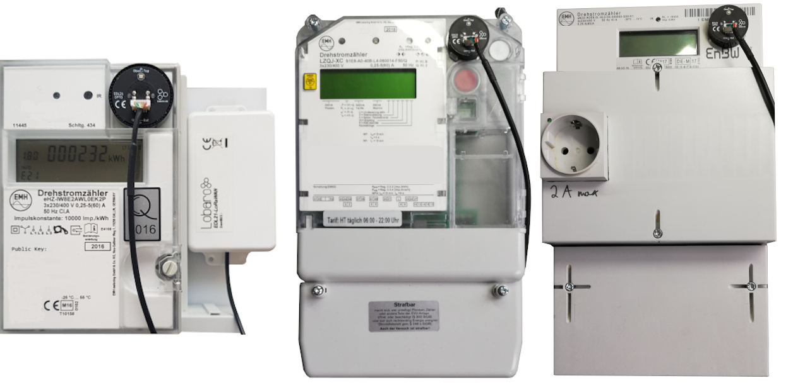

EDL21 Electricity meter LoRaWAN Bridge
Order number: 8000057

Consider using the latest firmware on your hardware
Target Measurement / Purpose
Readout of EDL21 electricity meter with optical infrared "INFO" interface.
Quickstart
- Connect to the device with the Lobaro Tool using the Lobaro Config Adapter
- Under Configuration click "Reload Config" and change the fields ReadCron and ObisCode as you need followed by clicking on "Write to Device" click here for a configuration example
- Register the device in your LoRaWAN network
- Insert 2 batteries ('AA' size, 1.5V) / Connect external powersupply
- If not connected to anything the red LED will start blinking as long as no data is received, after 1 minute it will sleep for 15 seconds after every 5 retries
- Tighten the screws and install the bridge beside your electric meter
- Place the EDL21 opto head on the "Info" interface
- As soon as the EDL21 receives data its green LED will light up for 5 seconds, when connected to a LoRa Network its blue LED will light up for 5 seconds
- Check the sent data (port 3), if payload is zero the EDL21 was not able to read data, recheck proper alignment
{kind=link}
Configuration
The configuration is done using Lobaro Maintenance Tool and the Lobaro USB PC adapter.
LoRaWAN
The connection to the LoRaWAN network is defined by multiple configuration parameters. This need to be set according to your LoRaWAN network and the way your device is supposed to be attached to it, or the device will not be able to send any data.
There are two different methods to attach a device to a LoRaWAN network: Over-the-air-activation (OTAA) and Activation-by-personalisation (ABP). Depending on which method you are using you will have to set different values.
Several values are a number of bytes, that need to be entered as hexstrings (without
0x-prefix). So e.g. the DevEUI is a value of 8 bytes encoded in hex will be
16 hexdigits long. A sample value would be 0123456789abcdef.
| name | used | type | description |
|---|---|---|---|
OTAA |
both | bool | true ≡ use OTAA, false ≡ use ABP |
DevEUI |
OTAA | hexbyte[8] | the 8 byte DevEUI identifies the hardware on the join operation. The default value is a world wide unique value predefined in the hardware. Should not be changed unless required by the network provider. |
AppEUI |
OTAA | hexbyte[8] | ID defining the application used in the LoRaWAN network. |
AppKey |
OTAA | hexbyte[16] | Key used to encrypt communication with the LoRaWAN network. |
AppSKey |
ABP | hexbyte[16] | Application Session Key to be synced with the LoRaWAN network. |
NetSKey |
ABP | hexbyte[16] | Network Session Key to be synced with the LoRaWAN network. |
DevAdr |
ABP | hexbyte[4] | Device Address used to identify device in the LoRaWAN network. |
SF |
both | int | Initial LoRa spreading factor used for transmissions. Valid range is 7-12. The actual spreading factor used by change during operation if ADR is used. |
ADR |
both | bool | Should adaptive data rate be used? true ≡ use ADR, false ≡ don't |
Operation
Configuration values defining the behaviour of the device.
| name | description | example value |
|---|---|---|
ReadCron |
Cron expression defining when to read | 0 0/15 * * * * for every 15 minutes |
ObisCode |
Comma separated list of ObisCodes to select a subset of the available information | 1-0:1.7.255*255 = Leistung (Momentan) |
See also our Introduction to Cron expressions and our Introduction to Obis Codes.
LED blinking patterns
The following pattery are explained in the order in which they appear after initial power on / reset of the device.
| color | duration | description |
|---|---|---|
red/green/blue |
300ms each | initial pattern after reset |
red |
short, blinking | trying to receive meter optical data for the first time after reset |
green |
5 seconds | successfully received meter optical data |
blue |
5 seconds | LoRaWAN network join |
blue |
short | sending LoRaWAN data uplink |
off |
- | low-power mode until next sendout cycle |
As you can see by this the device will start the LoRaWAN join only after receiving optical data at least once.
Appendices
Technical characteristics
| Product | |
| Type name | EDL21-LoRaWAN |
| Description | Electricity meter over LoRaWAN Bridge |
| RF tranceiver | |
| Type | Semtech SX1272 |
| Frequency | 863 MHz to 870 MHz |
| Max. TX Power | max. +14 dBm |
| Typical RF Range | ≤2km |
| Ideal RF Range | ≤10km (free line of sight) |
| LoRa communication | |
| Protocol | Class A LoRaWAN 1.0.1 EU868 |
| Activation method | Over-the-air-activation (OTAA) Activation by personalization (ABP) |
| Encryption | AES128 |
| Environmental Requirements | |
| Operating temperature | -20°C – 55°C |
| Max installation height | 2m |
Standards   |
|
Disposal / WEEE / Entsorgung
Information about the disposal of the Device.
Reference decoder
This is a decoder written in JavaScript that can be used to parse the device's LoRaWAN messages. It can be used as is in The Things Network.
function readName(bytes, i) { return bytes.slice(i, i + 6); } function readValue(len, bytes, i) { if (len <= 0) { return []; } return bytes.slice(i, i + len); } function toHexString(byteArray) { var s = ''; byteArray.forEach(function (byte) { s += ('0' + (byte & 0xFF).toString(16)).slice(-2); }); return s; } function parse_int8(bytes, idx) { bytes = bytes.slice(idx || 0); var t = bytes[0]; if ((t & 1 << 7) > 0) { // temp is negative (16bit 2's complement) t = ((~t) & 0xff) + 1; // invert 16bits & add 1 => now positive value t = t * -1; } return t; } function parse_int16(bytes, idx) { bytes = bytes.slice(idx || 0); var t = bytes[0] << 8 | bytes[1] << 0; if( (t & 1<<15) > 0){ // temp is negative (16bit 2's complement) t = ((~t)& 0xffff)+1; // invert 16bits & add 1 => now positive value t=t*-1; } return t; } function parse_uint16(bytes, idx) { bytes = bytes.slice(idx || 0); var t = bytes[0] << 8 | bytes[1] << 0; return t; } function toNumber(bytes) { var res = 0; for (var i = 0, s = 0; i < bytes.length; i++) { res |= bytes[i] << s; s += 8; } return res; } function readVersion(bytes) { if (bytes.length<3) { return null; } return "v" + bytes[0] + "." + bytes[1] + "." + bytes[2]; } function decodeStatus(bytes) { var decoded = { "version":readVersion(bytes), "flags": bytes[3], "vBat": parse_uint16(bytes, 4) / 1000, "temp": parse_int16(bytes, 6) / 10, }; return decoded; } function decodeSmlValuesV1(bytes) { var decoded = { values: [], }; if (bytes.length === 1) { // No Data! Read error? return decoded; } var pos = 0; while (pos < bytes.length) { var name = readName(bytes, pos); pos += 6; var len = bytes[pos]; pos += 1; var value = readValue(len, bytes, pos); pos += len; var val = { nameHex: toHexString(name), len: len, value: toNumber(value), valueHex: toHexString(value) }; decoded.values.push(val); } return decoded; } function decodeSmlValuesV2(bytes) { var decoded = { values: [], }; if (bytes.length === 1) { // No Data! Read error? return decoded; } var pos = 0; while (pos < bytes.length) { var name = readName(bytes, pos); pos += 6; var len = bytes[pos]; pos += 1; var value = readValue(len, bytes, pos); pos += len; if (len > 0) { var exponent = parse_int8(bytes, pos); pos += 1; } if (len > 0) { var val = { nameHex: toHexString(name), len: len, value: toNumber(value) * Math.pow(10, exponent), valueHex: toHexString(value), } } else { var val = { nameHex: toHexString(name), len: len, value: toNumber(value), valueHex: toHexString(value), } } decoded.values.push(val); } return decoded; } function Decoder(bytes, port) { // Decode an uplink message from a buffer // (array) of bytes to an object of fields. if (port === 1) { return decodeStatus(bytes); } if (port === 2) { return decodeSmlValuesV1(bytes); } if (port == 3) { return decodeSmlValuesV2(bytes); } }
Example parser result
Test input: 01 00 01 08 00 FE 08 7B 7D 23 00 00 00 00 00 FF
{ "values": [ { "len": 8, "nameHex": "0100010800fe", "value": 232588.30000000002, "valueHex": "7b7d230000000000" } ] }